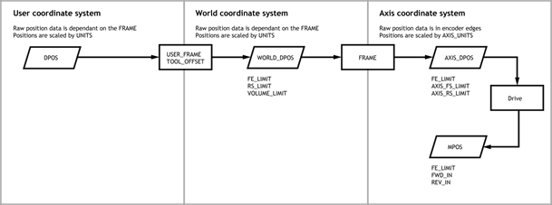
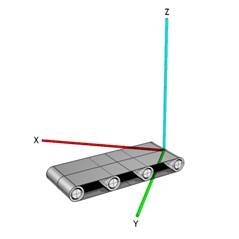

Axis Command
USER_FRAME(identity [, x_offset, y_offset, z_offset [, x_rotation [, y_rotation [, z_rotation]]]])
The USER_FRAME allows the user to program in a different coordinate system. The USER_FRAME can be defined up to a 3-axis translation and rotation from the world coordinate origin. The rotations are applied using the Euler ZYX convention. This means that the z rotation is applied first, then the y is applied on the new coordinate system and finally the x is applied. The coordinate system is defined using the ‘right hand rule’ and the rotation of the origin is defined using the ‘right hand turn’.
USER_FRAME requires the kinematic runtime FEC
The default coordinate system has the identity 0 and is equal to the world coordinate system, this cannot be modified. If you wish to disable the USER_FRAME select USER_FRAME(0).
USER_FRAMEs are applied on the axis FRAME_GROUP . If no FRAME_GROUP is defined then a runtime error will be generated.
Movements are loaded with the selected USER_FRAME. This means that you can buffer a sequence of movements on different USER_FRAMES. The active USER_FRAME is the one associated with the movement in the MTYPE . If the FRAME_GROUP is IDLE then the active USER_FRAME is the selected USER_FRAME.
The USER_FRAME is applied to all the axes in the FRAME_GROUP . This can be the same group as used by FRAME . The FRAME_GROUP does not have to be 3 axis, however the USER_FRAME will only process position for the axes in the FRAME_GROUP . It can be useful in a 2 axes FRAME_GROUP to perform a USER_FRAME rotation about the third axis.
In certain applications involving different USER_FRAMEs, reverting back to USER_FRAME(0) between USER_FRAMEs is necessary.

If you wish to check which USER_FRAME, TOOL_OFFSET and VOLUME_LIMIT are active you can print the details using FRAME_GROUP (group).
|
identity: |
0 = default group which is set to the world coordinate system |
|
1 to 31 = Identification number for the user defined frame. |
|
|
x_offset: |
Offset in the x axis from the world origin to the user origin. |
|
y_offset: |
Offset in the y axis from the world origin to the user origin. |
|
z_offset: |
Offset in the z axis from the world origin to the user origin. |
|
x_rot: |
Rotation about the items x axis in radians. |
|
y_rot: |
Rotation about the items y axis in radians. |
|
z_rot: |
Rotation about the items z axis in radians. |
A conveyors origin is at 45degrees to the world coordinate (robots) origin, as shown in the image. To ease programming a USER_FRAME is assigned to align the x axis with the conveyor so that it is possible to program in the conveyor coordinate system.

FRAME_GROUP(0,0,0,1,2)
USER_FRAME(1,0,0,0,PI/4)
Initialise a user coordinate system then perform a movement on the world coordinate system before starting a FORWARD on the first user coordinate system.
FRAME_GROUP(0,0,0,1,2)
BASE(0,1,2)
DEFPOS(10,20,30)
USER_FRAME(1,10,20,30,PI/2)
USER_FRAME(0)
MOVEABS(100,100,50)
WAIT IDLE
USER_FRAME(1)
FORWARD
Initialise a user coordinate system then perform a movement on the world coordinate system before starting a FORWARD on the first user coordinate system until input 2 is on. Do this twice with a different USER_FRAME once input 3 is on.
FRAME_GROUP(0,0,0,1,2)
BASE(0,1,2)
DEFPOS(10,20,30)
USER_FRAME(1,10,20,30,PI/2)
USER_FRAME(0)
MOVEABS(100,100,50)
WAIT IDLE
USER_FRAME(1)
FORWARD
WAIT UNTIL IN(2) = ON
RAPIDSTOP
USER_FRAME(0)
WAIT UNTIL IN(3)=ON
USER_FRAME(2,0,0,0,PI/4)
USER_FRAME(2)
FORWARD